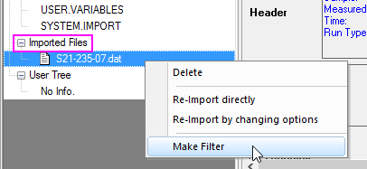

FAQ-919 ASCII-Importfilter oder Importoptionen, die in einem Blatt gespeichert sind, schlagen nach einem Upgrade auf Origin 2018 fehl
import-settings-filter-broken-after-upgrade
Letztes Update: 23.01.2018
Origins ASCII-Importcode wurde modifiziert für Origin 2018 SR0 (b9.5.0.193). Anwender mit Importfilterdateien (*.OIF) und Arbeitsmappendateien (*.OGW), die mit älteren Versionen von Origin für den Datenimport benutzerdefiniert angepasst wurden, sollten diese Dateien problemlos verwenden können.
Wenn Sie trotzdem Schwierigkeiten beim Importieren von Daten mit Hilfe von älteren Origin-Importfilterdateien oder Arbeitsmappendateien (.OGW) haben, in Sie Importeinstellungen gespeichert haben, sollten Sie die Daten zur Verwendung in Origin 2018 konvertieren.
Konvertieren einer .OGW-Datei aus Origin 2017 oder älter in Origin 2018 SR0 oder neuer
- Öffnen Sie .OGW-Datei von Origin 2017 (oder älter) in Origin 2018.
- Öffnen Sie das Skriptfenster (Fenster: Skriptfenster) und verifizieren Sie, dass:
@IA = <Enter>
... einen Wert von 2 ausgibt.
- Importieren Sie Ihre ASCII-Datei erneut.
- Speichern Sie die Arbeitsmappe (File: Save Window As) als Dateityp = .OGW neu.
Konvertieren einer .OIF-Datei aus Origin 2017 oder älter in Origin 2018 SR0 oder neuer
- Öffnen Sie das Skriptfenster (Fenster: Skriptfenster) und verifizieren Sie, dass:
@IA = <Enter>
... einen Wert von 2 ausgibt.
- Ziehen Sie eine ASCII-Datei per Drag&Drop, die das ältere .OIF-Format für den Import verwendet.
- Klicken Sie mit der rechten Maustaste auf die Titelleiste der Arbeitsmappe und wählen Sie Zeige Organizer.
-
-
- 
- Klicken Sie, um den Zweig Importierte Dateien zu erweitern. Klicken Sie dann mit der rechten Maustaste auf die importierte Datei und wählen Sie Filter erstellen.
- Speichern Sie den Filter in Origin 2018 oder neuer.
Schlüsselwörter:Neu importieren, Dateiheader, Subheader, Dialogdesign